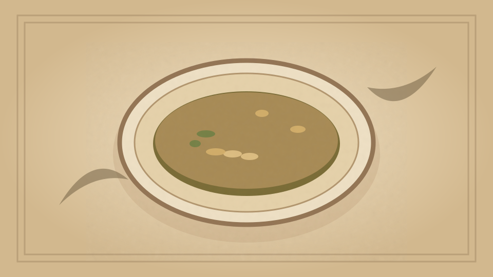

1910 · Fannie Merritt Farmer · SOUPS
Bortchock Soup
The Boston Cooking-School Cook Book

Historical Recipe
The following text is extracted from the 1910 edition, retaining historical terminology and quantities.
Original Ingredients & Directions
6 lbs. shin of beef
3 qts. cold water
1 cup carrot cubes
½ cup sliced onion
6 cloves
1 allspice berry
2 sprigs parsley
2 stalks celery
1 beet finely cut
1 tablespoon salt
1 teaspoon peppercorns
2 tablespoons butter
Prepare and cook beef same as for Bouillon. Cook vegetables in butter five minutes; then add to soup with remaining seasonings. Cook one and one-half hours, strain, cool quickly, remove fat, and clear. When ready 117 to clear, add one cup finely chopped raw beet and one-fourth cup vinegar. Select red beets for this soup, and serve as soon as possible after clearing, otherwise it will lose its bright red color, which makes the dish especially appropriate for an American Beauty Dinner.
Automatically extracted transcription; editorial verification pending. Historical instructions may not meet modern food-safety standards.